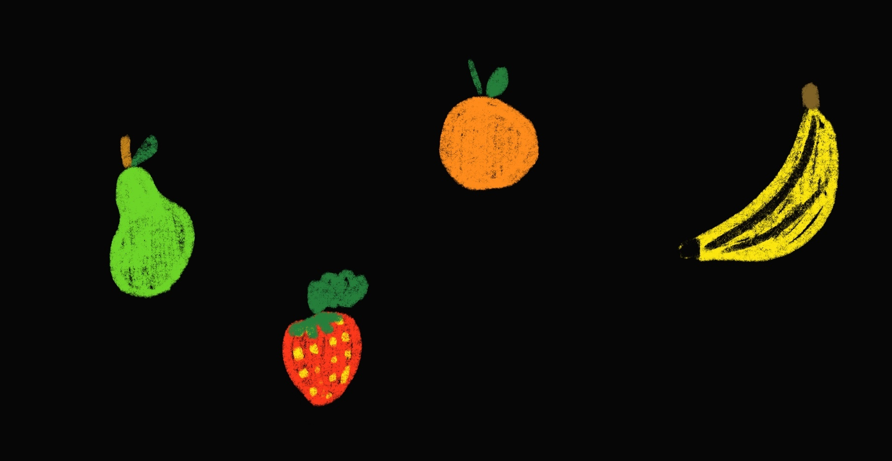

· In the UK, all bats love to eat insects.
· Each kind of bat has its own favourite insect snacks, and they catch them in special ways
· Most of the time, bats catch insects while flying in the air, like little superheroes
· But sometimes, they like to hang upside down to eat bigger bugs
· Bats are like super hungry because flying takes a lot of energy. Imagine a tiny bat no bigger than your thumb – it can eat as much as 4 to 8 grams of insects every night! That's like munching on a grape or two. Bats are like little bug-hungry avengers!
